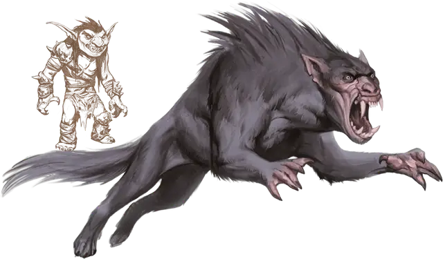

Баргест
Barghest
Большое Исчадие, обычно нейтрально-злое

Класс Доспеха 17 (природный доспех)
Хиты 60 (8к10 + 16)
Скорость 60 футов (30 футов в облике гоблина)
| мод | спас | ||
|---|---|---|---|
| СИЛ | 19 | +4 | +4 |
| ЛОВ | 15 | +2 | +2 |
| ТЕЛ | 14 | +2 | +2 |
| мод | спас | ||
|---|---|---|---|
| ИНТ | 13 | +1 | +1 |
| МДР | 12 | +1 | +1 |
| ХАР | 14 | +2 | +2 |
Навыки Восприятие +5, Запугивание +4, Обман +4, Скрытность +4
Сопротивление урону огонь, холод, электричество; дробящий, колющий, рубящий от немагических атак
Иммунитет к урону кислота, яд
Иммунитет к состояниям отравление
Чувства слепое зрение 60 футов, тёмное зрение 60 футов, пассивное Восприятие 15
Языки Общий, Бездны, Гоблинский, Инфернальный, Телепатия 60 фт.
Опасность 4 (1100 опыта)
Бонус мастерства +2
Среда обитания Горы, Лес, Луг
Особенности
Изгоняемый огнём. . Когда баргест начинает свой ход будучи объятым пламенем, высота или ширина которого составляет 10 футов или больше, он должен преуспеть в спасброске Харизмы Сл 15, и в случае провала будет немедленно изгнан в Геену.
Пожирание души. Баргест может сожрать тело Феи или Гуманоида, которого он убил в течении последних 10 минут. Пожирание длится 1 минуту и оно уничтожает тело жертвы. Душа жертвы заперта в баргесте на 24 часа, после чего она переваривается и существо не может быть возвращено к жизни. Если баргеста убить до того как душа переварится, то душа отпускается.
Когда душа гуманоида заперта в баргесте, любая форма воскрешения имеет шанс в 50 % потерпеть неудачу и быть израсходованной впустую.
Действия
Мультиатака. Баргест совершает одну атаку Укусом и одну атаку Когтями.
Укус. . Рукопашная атака оружием: +6 к попаданию, досягаемость 5 футов, одна цель. Попадание: 13 (2к8 + 4) колющего урона.
Когти. . Рукопашная атака оружием: +6 к попаданию, досягаемость 5 футов, одна цель. Попадание: 8 (1к8 + 4) рубящего урона.
Использование заклинаний. Баргест накладывает одно из следующих заклинаний, используя Харизму в качестве базовой характеристики и без использования материальных компонентов (Сл спасброска от заклинаний 12):
• Неограниченно: левитация [levitate], малая иллюзия [minor illusion], бесследное передвижение [pass without trace];
• 1/день каждое: очарование личности [charm person], переносящая дверь [dimension door], внушение [suggestion].
Бонусные действия
Перевертыш. Баргест превращается в Маленького гоблина или обратно в свою истинную форму. За исключением размера и скорости, его характеристики одинаковы в каждой форме. Любое его снаряжение не трансформируется вместе с ним. В случае смерти баргест принимает свою истинную форму.
Описание
Давным давно Маглубиет- завоеватель, а в последствии и владыка ранних гоблиноидов, заключил сделку с Генералом Геенны в обмен на помощь. Генерал предоставил ему юголотов, которые погибли, выполняя приказ бога гоблинов. Но когда пришло время платить по сделке, Маглубиет отступился от своего слова. В качестве мести Генерал Геенны создал поглощающих души баргестов, чтобы те поедали души гоблиноидов.
Задачей каждого баргеста, заложенной в него Генералом Геенны, — пожирать души. Он поедает эти души, пожирая тела тех, кого убивает, предпочитая гоблиноидов.
Баргест желает дождаться того дня, когда он завершит миссию, вернется в Геенну, и будет служить Генералу напрямую в его легионах юголотов, но он не убивает гоблиноидов без разбора. Поглощая души лидеров гоблинов и сильных личностей, в отличие от простых гоблинов, баргест получит более высокий статус в посмертии. Баргесты обычно держат свою истинную натуру в тайне, охотясь на одного или двух гоблинов при возможности, пока не достигают взрослого возраста и не становятся достаточно сильными, чтобы искать добычу посерьезнее.
Баргест избегает контактов с большими открытыми огнями. Любой костер, который больше его тела, действует как портал в Геенну и изгоняет изверга на этот план, где его скорее всего убьют или сделают рабом юголотов за провал.